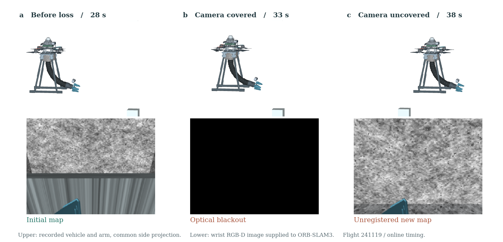
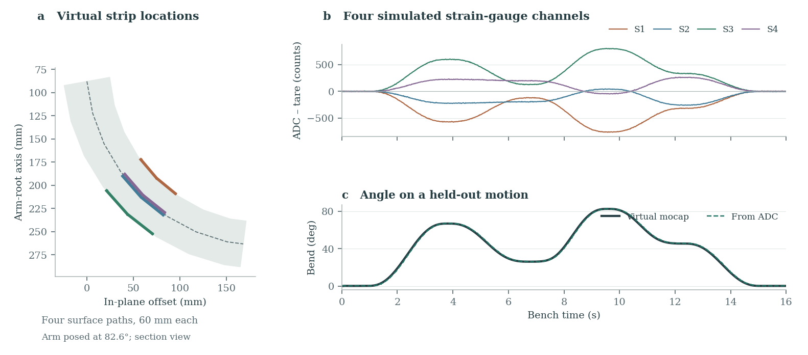
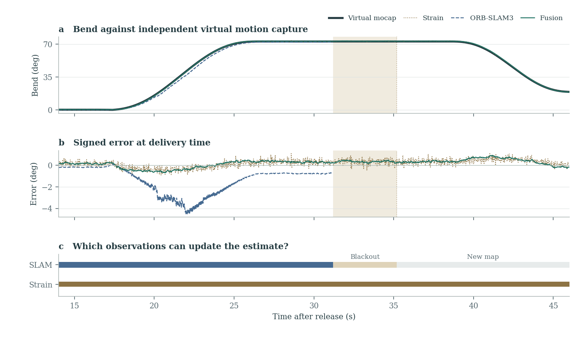

G1 · 柔性臂本体感知 / 2026-11-19 22:04（北京时间）
视觉失效时，柔性臂怎样保持形态估计？
四趟单门飞行重放中，遮挡 4 秒时原地图视觉输出中断，融合每个时刻仍有估计，弯曲量 RMSE 为 0.50°。
大附件单独提供：虚拟台架训练和测试数据、飞行传感器和动捕数据、无标签 SLAM 跟踪与融合数据、有标签定位诊断。
模型与场景

01遮挡前、遮挡中与重新建图
同一趟运行的侧视剖面与末端相机原始输入。

曲线与机制图

01四条表面应变路径怎样产生读数
独立台架测试动作。四通道 ADC 相对零点的变化、训练模型输出与虚拟动捕逐时对应。


02视觉失效前后的弯曲量、误差和可用性
同一时钟的虚拟动捕、应变、原地图视觉与融合。阴影为视觉遮挡对应的输出时段。

视频回放
0132 秒同步录像
原始仿真飞行轨迹、实际进入 SLAM 的腕部图像和融合弯曲量，同步回放。
论文与报告
两页组会审阅
训练与评分数据、四组对照、遮挡恢复和单门净空的定量衔接。
数据及运行记录
四趟逐组误差与覆盖率
正常与遮挡分别评分，包含相同可见帧和弯曲平面可辨时刻。
独立台架评分
8 段训练、2 段验证、3 段测试。
整机净空与判定代价
80 个门区时刻乘以 33 种假设门槛高度；沿用此前校准的经验余量。
时钟、前缀及坐标不变性复核
逐趟记录原地图恢复情况和角度范围，检查不使用未来观测。
原始数据包校验值
四份证据包的字节数、成员数和 SHA-256。
无标签对照协议
试验前冻结光学遮挡时段、训练划分、初始坐标系与评价范围。
虚拟台架训练和测试数据
13 段原始读数、独立动捕点簇、模型和台架评估。
飞行传感器和动捕数据
四路应变采样、独立评分真值、六趟记录、标签诊断与净空。
无标签 SLAM 跟踪与融合数据
原生逐帧跟踪状态、地图编号、重投影误差、估计结果、RGB-D 样本及完整图像指纹。
有标签定位诊断
保留用于核对相机外参和解角链的早期对照。